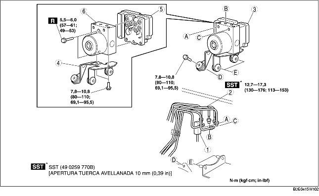

1. Quitar la batería y la correspondiente bandeja. [Véase REMOCION/INSTALACION BATERIA (ZJ, Z6)]. [Véase REMOCION/INSTALACION BATERIA (LF)].
2. Para vehículos con volante a la izquierda, quitar el tubo flexible del depósito (vehículos MTX). (Véase Detalles de remoción tubo flexible del depósito). (Véase Detalles de remoción tubo y tubo fexible del depósito del embrague). (Véase Detalles de instalación tubo flexible del depósito). (Véase Detalles de instalación tubo y tubo fexible del depósito del embrague).
3. Quitar según el orden indicado en la tabla.
4. Instalar en el orden contrario al de la remoción.
5. Efectuar el procedimiento de inicialización para el sensor combinado y el sensor presión fluido de frenos. (Véase PROCEDIMIENTO DE INICIALIZACION SENSOR COMBINADO). (Véase PROCEDIMIENTO DE INICIALIZACION SENSOR PRESION FLUIDO FRENOS).
6. Borrar los DTC de la memoria. (Véase Procedimiento de cancelación de los DTC).

.
|
1
|
Conector
(Véase Detalles de remoción conector).
(Véase Detalles de instalación conector).
|
|
2
|
Tubo de freno
(Véase Detalles de remoción tubo de freno).
|
|
3
|
Soporte del DSC HU/CM
|
|
4
|
Soporte
|
|
5
|
DSC CM
|
|
6
|
DSC HU
|
1. Colocar una referencia para la alineación sul tubo del freno y el DSC HU/CM.
2. Aplicar una cinta de protección al conector para evitar que el fluido de frenos entre.
3. Quitar el tubo del freno.
1. Como se muestra en la figura, desplazar el soporte en la dirección indicada por la flecha y quitar el conjunto DSC HU/CM y el soporte de la carrocería.
1. Alinear las referencias e instalar el tubo de freno en el DSC HU/CM como indicado en la figura.